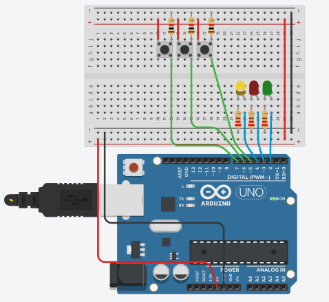
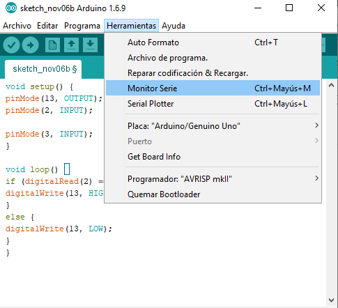
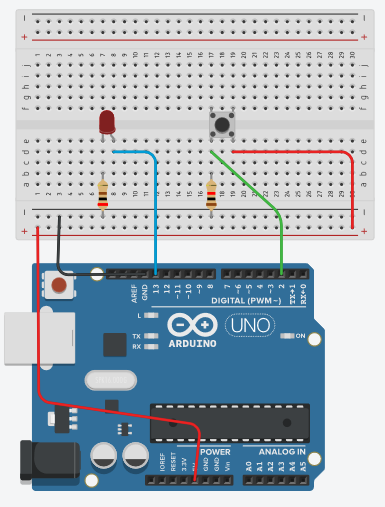

Curso Arduino
Vamos a aprender arduino desde cero, con la creación de proyectos simples con programas comentados donde podras conocer y estudiar instrucciones nuevas y la recomendación de enlaces a teoría.
Los ejercicios se pueden probar en un montaje real con una placa arduino o en el simulador muy recomendable tinkercad. es gratuito con solo registraste en su página. enlace a video tutorial arduino tinkercad o en este otro
Empezamos con los siguientes apuntes que nos podemos encontrar en los siguiente enlaces.
Hola mundo
La primera práctica es como no, el hola mundo de arduino, Podemos ver una explicación del ejemplo hola mundo en la pagina 17 de
Robótica Libre con Arduino
En este proyecto vemos la estructura del programa,
void setup { es la zona del progama que se ejecuta al conectar arduino, solo se ejecuta una sola vez, y se utiliza por ejemplo para activar pines como entradas o salidas, }
void loop{ es la parte de programa que se ejecuta ciclicamente}
// comentarios en linea, el comentario se inicia despues de la instrucción y termina a cambiar de línea.
/* inicio comentario, este comentario dura desde el inicio hasta que encuentre la instrucción fin de comentario */
Tambien encontramos en internet una explicación en en el siguiente enlace
Programa
Secuencia de leds
En la página 29 de taller robotica libre arduino encontramos podemos realizar la práctica del semáforo
En el siguiente proyecto encenderemos primero el led verde, luego añado el rojo y luego el amarillo, despues parpadean los tres a la vez y vuelta a empezar el ciclo.
NOTA: los pulsadores no hace falta cablearlos todavia.
Programa
Pulsador, instrucción ‘if’ ‘else’
Toca trabajar con entradas, conectando un pulsador a arduino y la instrucción ‘if’ , que es como decir si pasa esto haz esto ‘else’ sino haz esto otro.
Mas información en el siguiente enlace programarfacil.com blog/arduino-blog if-else-arduino/
Tenemos un ejemplo en la página 34 de taller de programación libre arduino
Programa: Enciende un led al activar un pulsador
Mismo programa pero como las instruccion if y else solo tiene una condición de una línea se puede eliminar las llaves y quedar el programa así
Con este programa, el led estará intermitente mientras este activado el pulsador.
Operaciones lógicas
Con la instrucción if, ya vista en el tema pulsadores, vimos un condicional, si el pulsador esta activado, enciende una luz.
En este tema vamos a ampliar las posibilidades de la instrucción if, aumentando el numero de condiciones para realizar una acción.
Ejemplos:
- Si esta activado el pulsador uno Y el pulsador dos enciendo un led
- Si esta activado el pulsador uno O el pulador dos enciendo un led
- Si esta activado el pulsador uno Y NO esta activado el pulsador dos enciendo un led
Ejercicio
En una instalación con tres led conectados a los pines 2,3 y 4 y tres pulsadores conectados a los pines 5,6 y 7.
El led 2 se encenderá si activo los pulsadores 5 y 6 y no activo el 7
El led 3 se encenderá si activo el pulsador 5 o el 6
El led 4 se encenderá si no pulso el 5
solución

Programa
Con siguiente programa si activamos el pulsador conectado al pin 5, el led verde parpadea con una frecuencia de medio segundo, si pulsamos los pulsadores conectados a 6 o 7 se encienden los led rojo y amarillo.
Si el parpadeo lo realizamos con una frecuencia de 2 segundos, observamos que las reación si pulso el pulsador del pin5 y luego el pulsador del pin6 o del pin7 observo que tardan casi 4 segundos en encender desde la pulsación de uno de estos, y pasa algo similar en el apagado.
Esto se solucionará mas adelante cuando cambiemos la instrucción delay por otra.
Monitor serie
Enlaces donde encontras información:
luisllamas.es arduino-puerto-serie/
aprendiendoarduino monitor-serie/
- Instrucción serial.print()
cursoarduino serialprint
aqui además vemos una tabla de código ascii
manueldelgadocrespo blogspot.com
Es hora de comunicarnos con el ordenador, lo haremos con instrucción
Serial.begin(9600);
Esta instrucción habilita la comunicación.
Este instrucción debe la ponemos dentro de void setup(){
Con ella habilitamos la comunicación con el ordenador, y ATENCIÓN no podemos utilizar los pines 0 y 1 del arduino como entradas o salidas, porque los utiliza para la comunicación, asi que en nuestros programas dejaremos esos pines sin conectar.
Para ver el resultado de la comunicación en el ordenador abrimos en la IDE de arduino el monitor serie

Para ver un texto en el monitor serie utilizo la instrucción
Serial.print("entrecomillado");
("el texto entrecomillado aparece en el monitor cuando se ejecuta la instrucción")
Serial.print(variable);
sino pongo comillas se imprime el valor de la variable
Serial.println(" texto ");
si termino con println la siguiente impresión se escribre en al línea siguiente.
En el siguiente programa veras aparecer mensajes de texto en el monitor serie cada segundo, y sera distinto si el pulsador esta activado o no lo está.
Solo hemos utilizado un led y un pulsador, pero te vale el montaje de la protoboard del tema anterior.
Adelantamos el concepto de variable, que veremos un poco más en profundidad en el tema siguiente.
int Led1 = 2;
la variable led1 almacena el valor 2
Programa
NOTA: El programa realiza una ejecución cada segundo, por la instrucción delay (1000); por tanto debe de tener accionado el pulsador como mínimo a 1 segundo para asegurarte el funcionamiento.
Ampliamos el programa añadiendo la variable (estadoPulsador1) que toma el valor 0 si no esta pulsado y 1 si esta pulsado con la instrucción
estadoPulsador1=digitalRead(pulsador1);// la variable estadoPulsador1 toma el valor del estado del pin 5, porque pulsador1 vale 5.
Programa
Ante cualquier duda o ejercicio relacionado no dudes en ponerlos en comentarios.
OTRO EJEMPLO DE IMPRESIÓN

Programa
NOTA: puedo utilizar el montaje tres led tres pulsadores, cambiando las instrucciones
int pin_pulsador= 2;
por
int pin_pulsador= 5;
int pin_led=13;
por
int pin_led=2;
Variables
¿Que es una variable? aprendiendoarduino/
Tipos de variablesprometec.net intro-programacion
Tipos de Datos
Si quiero utilizar la variable en cualquier parte del programa, lo tengo que declarar al principio del programa, antes del setup(), y se las llama VARIABLES GLOBALES.
Si la declaro dentro de un setup(), if {}, swich{}… solo funciona dentro de esa función y se las llama VARIABLES LOCALES
Puedes ver unos ejemplos de utilización de variables en la siguiente página web diwo.bq.com variables-en-arduino/
ejemplo
En el siguiente programa, la variable «a» se incremente una unidad por cada pulsación o por cada medio segundo que mantenga pulsado el pulsador 1 (cableado al pin 5), luego al activar el pulsador 2 (cableado al pin 6) se enciende durante 2 segundos, un led si «a» vale 1, dos led si «a» vale 2 y tres led si «a» vale 3, y cambio el valor de la variable «a» a 0. puedo ver el valor de la varible «a» con el monitor serie.
Programa
Anidar if
El programa funciona igual que el realizado en la anterior entrada «variables», pero se ha programado anidando if dentro de otros if.
Programa
Switch Case
Puede conocer el funciónamiento de la instrucción switch – case en el siguientes enlances
arduino.utfsm.cl switch-case/
Volvemos repetir funcionamiento del programa «variable» pero en este caso hemos utilizado la instrucción switch-case.
Programa
Monitor Serie recibiendo mensajes
Para el siguiente proyecto, volvemos a utilizar el montaje 3 leds 3 pulsadores, pero solo vamos a utilizar los leds y el monitor serie.
En esta entrada, voy a realizar un programa que me encienda el led verde si escribo V y lo apago si escribo v.
En este enlace encotraras como enviar y recibir numeros por el puerto serie, es un articulo de arduino avanzado realizado por Luis LLamas.
Programa
Como ampliación voy ha hacerlo con los tres led Verde, Rojo, y Amarillo.
Programa
Entradas analógicas
Una entrada analógica en arduino toma valores entre 0 y 5 voltios y los convierte de forma a lineal a valores entre 0 y 1023.
ejemplo
si el pin analógico A0 recibe una tensión de 0V lee un valor 0
si el pin analógico A0 recibe una tensión de 2,5 V lee un valor 512
si el pin analógico A0 recibe una tensión de 5V lee un valor 1023
Vemos que diferencia de una entrada digital que solo tomaba dos valores 0 ó 1 una entrada analógica puede tomas 1024 valores diferentes que dependiendo del sensor a que este conectado nos puede dar información de temperatura, iluminación, posición…
Conocemos mas de las entradas analógicas en el siguiente enlace luisllamas.es entradas-analogicas-en-arduino/
En el siguiente programa, en función de la posición del potenciometro, tendremos todos los leds apagados o encendido el verde o el verde y el rojo o todos encendidos.
Utilizamos la entrada digital A0, la tensión que recibe depende la posición del potenciometro, si la tensión que recibe es menor de 1,25V los tres leds estan apagados, si esta entre 1,25V y 2,5V enciendo el led verde, entre 2,5 y 3,75 el verde y el rojo y si es mayor que 3,75 enciendo los tres led.
Programa
Aprovechando el mismo circuito y con el siguiente programa, el led rojo estará intermitente un tiempo entre 200 ms y 5315 ms, que seleccionare con el potenciometro.
El 5315 sale de resolver la operación 5*1023+200
Programa
Salidas analógicas
Si queremos alimentar una salida conectada a un pin de arduino, con tensiones entre 0 y 5, por ejemplo para dar mas o menos intensidad a un led, velocidad a un motor cc … los haremos mediante una salida PWM, que es dara valores de tensión de salida medios entre 0V y 5 V.
Pasa saber mas recomiendo la pagina de Luis Llamas https://www.luisllamas.es salidas-analogicas-pwm-en-arduino
En Arduino Uno, Mini y Nano, disponemos de 6 salidas PWM de 8bits en los pines 3, 5, 6, 9, 10 y 11. si te fijas en tu placa arduino, estos pines estas marcado con el símbolo de corriente alterna. ~ (126 de la tabla ascii, para imprimirlo en pantalla pulsa la tecla alt y sin soltar escribe el numero 126, y obtendras el caracter ascii 126)
En Arduino Mega disponemos de 15 salidas PWM de 8bis en los pines 2 a 13 y 44 a 46
La tensión que suministra la salida PWM de arduino son valores de 0 a 255 de manera que el incremento de un unidad equivales a 5V/256= 0.0195V.
Un valor 0 equivale a una salida de 0V
un valor de 30 equivale a 30*0.0195=0,585V
un valor de 128 equivale 128*0.0195 = 2,5V
Utilizando el circuito de la entrada anterior, vamos ha realizar un programa que cambiara la iluminación del led rojo cuando giremos el potenciometro.
Como el valor del potenciometro suminitra un valor entre 0 y 1024 y la salida PWM toma valores entre 0 y 256. divideremos el valor de la entrada analógica por 4 y asi utilizar para la regulación todo el angulo del potenciometro
Programa
Función Map
En la entrada anterior ajustabamos el rango de la salida y el de la entrada dividiendo por 4. Esta acción se puede simplificar con la función map «mapeo». saber mas en el siguiente enlace manueldelgadocrespo
Programa
El programa quedara así
Programa
Servo.h
La librería servo.h nos facilita el trabajo con servomotores.
Podemos leer acerca de la Teoría de servos en la página de Luis Llamas
datasheet de MG995
páginas con teoría de servomotores
En los siguientes enlaces se explica la libreria servo.h
Videos sobre servos
Mi servo 995 tiene giro continuo, aqui tienes una respuesta,
Ejemplo básico: al conectar el servo al pin 9 este parte de la posición inicial, 0 grados, esta 5 segundos va la posición mitad, 90 grados, pasan 5 segundos pasa a la posición final, (180 grados), pasan 5 segundos vuelve a la posición inicial
Programa
El siguiente ejemplo son unas pruebo instrucciones de la libreria servo.h y veo su funcionamiento en el monitor serie, nota he observado que la instrucción asociado = MiMotorServo.attached(9); del desvandejose no funciona porque dicha función de lleva argumento
Programa
PRUEBAS
A continuación escribo un programa que estoy desarollando para controlar el servo con el teclado del ordenador,
Me he encorntrado con grandes sorpresas, con al instrucción para leer números de monitor serie
Serial.parseInt();
otra sorpresa es que al meter el valor en monitor serie en una primera lectura me lee el valor introducido pero en una segunda, me vuelve a leer 0 como lectura.
otra más al conectar el servo directamente a arduino me deja de funcionar monitor serie, nota probar con una alimentación externa al servo
por ultimo los servos que me vendierón mg995 no me gradúan el angulo sino que giran 360 y regulan la velocidad.
Programa